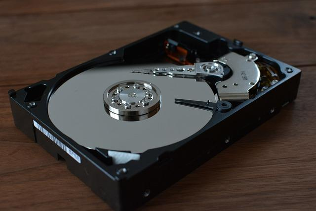

BytesOfProgress
Wiki
HDD / Hard Disk Drive
Hard Disk Drives (HDDs) are a type of non-volatile storage device used for storing and retrieving digital information using rapidly rotating disks (platters) coated with magnetic material. Here we will take a closer look at them.

HDDs have been the primary storage medium for computers and other electronic devices for many years due to their high capacity, relatively low cost, and fast read/write speeds.
HDDs consist of one or more platters mounted on a spindle and an actuator arm with read/write heads that move across the platters to access and write data.
There are different form factors of HDDs, including 3.5-inch and 2.5-inch drives, with 3.5-inch drives generally having a longer lifespan due to their lower rotational speeds.
IDE (Integrated Drive Electronics) was once a common interface for HDDs, but it has largely been replaced by SATA (Serial Advanced Technology Attachment) due to its faster data transfer rates and better performance. SATA interfaces offer improved compatibility with modern systems and higher data transfer speeds, making them the preferred choice for connecting HDDs to computers and other devices.
NOTE: This was written in 2024: In the future, storage capacities and r/w speeds will get significantly higher. Please do your own research on these aspects.
Performance: HDDs are known for their relatively slow performance compared to newer technologies like SSDs (Solid State Drives). This is because HDDs rely on mechanical components, such as spinning platters and moving read/write heads, which introduce latency.
Rotational Speeds: The rotational speed of an HDD's platters is a crucial factor in determining its performance and lifespan. Faster rotational speeds generally result in quicker data access times. Common rotational speeds for desktop HDDs are 5,400 RPM and 7,200 RPM.
Caching: HDDs often have a small amount of high-speed cache memory (usually in megabyte-range) to temporarily store frequently accessed data. This cache helps improving the overall system performance by reducing the time it takes to access commonly used files and applications.
Reliability: While HDDs are generally reliable storage devices, they are susceptible to mechanical failures over time, such as head crashes or motor failures. Factors like temperature, humidity, and physical shocks can also impact their reliability.
Capacity: With advancements in technology, HDDs have constantly increased in capacity over the years. Modern HDDs can offer terabytes (TB) of storage space, making them suitable for storing large amounts of data, including multimedia files, applications, and backups.
Power Consumption: HDDs consume more power compared to SSDs, primarily due to the mechanical components that need to be powered and the constant spinning of the platters. This higher power consumption can lead to increased heat generation and potentially higher electricity costs for users.
Cost-Effectiveness: With SSDs becoming more popular as a faster alternative, HDDs remain popular due to their cost-effectiveness, especially for storing large volumes of data. HDDs typically offer more storage capacity per dollar compared to SSDs, making them a preferred choice for consumers and businesses on a budget with extensive storage needs.
Types of HDDs
3.5" HDDs
Purpose: Designed for use in desktop computers, servers, and external storage enclosures.
Capacity: Varies, commonly available in capacities ranging from 500 GB to 16 TB.
Interface: SATA, SAS.
Lifespan: Generally longer due to lower rotational speeds.
2.5" HDDs
Purpose: Originally designed for use in laptops, ultrabooks. Now commonly used in external enclosures and servers.
Capacity: Varies, commonly available in capacities ranging from 250 GB to 4 TB.
Interface: SATA, SAS.
Lifespan: Shorter due to higher rotational speeds.
External HDDs
Purpose: Designed for use as portable storage solutions, backup drives, and multimedia storage.
Form Factor: Varies, commonly available in 2.5-inch and 3.5-inch form factors.
Capacity: Varies, commonly available in capacities ranging from 500 GB to 20 TB.
Interface: USB, Thunderbolt.
Network-Attached Storage (NAS) HDDs
Purpose: Designed for use in NAS devices, providing storage for home or small business networks.
Form Factor: Typically 3.5 inches.
Capacity: Varies, commonly available in capacities ranging from 1 TB to 18 TB.
Interface: SATA, SAS.
Lifespan: Varies based on usage, generally longer due to lower rotational speeds.
Lifespan and Care
Lifespan: Properly maintained HDDs can last for several years, but mechanical wear and tear, as well as unexpected failures, can occur over time.
Care: Avoid physical shocks and vibrations, maintain proper ventilation to prevent overheating, perform regular disk maintenance tasks such as defragmentation and error checking.
back